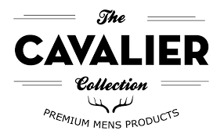

Q: Do you deliver every image you shoot?
A: No, we do not. We eliminate duplicate images, test shots, missed focused shots, shots with bad expressions and other images that may dilute the overall product delivery. For example, because we shoot with low apertures, sometimes we take a few extra shots to make sure we have the perfect focus. We don’t expect you to have the expertise or the time to zoom into each image to select the one with the sharpest focus, so we spend hours doing that on our end. In another example, candid laughs and emotional tears are some of the best images from the day. Unfortunately, they can also yield some unflattering facial expressions. We might snap a few extras of any of these moments to make sure we have a great shot with the ideal expression for the moment. With our expertise of processing millions of images each year, we may eliminate ones that we feel are duplicates and only deliver the best one.
Q: Does your studio provide videography services?
A: Yes. To see examples of our videography services, click here
Q: Have you shot at my venue before?
A: We have shot at hundreds of venues, so there is a good chance that we have. However, if we have not, we will get to the venue early on the day of and be sure to perform a thorough walk-through to scout out the best photography locations. We also do extensive online research prior to your big day!
Q: Do you do destination weddings? What additional fees are associated with destination weddings?
A: While Lin and Jirsa Wedding Photography is based out of Los Angeles and Orange County, we serve clients all around the world. Our destination wedding photography packages include the cost of travel and reasonable accommodations (check out our destination wedding FAQs here). Because of our frequent trips to the San Francisco Bay Area, special, lower rates may apply depending on the specific circumstances. Contact us by clicking here.
Q: Which photographer will be shooting my wedding?
A: Typically, the photographer you meet with will be the photographer for your engagement session and wedding. You may request to meet with a specific photographer; otherwise, we’ll make the decision based on personality, availability, language abilities, and your referral. For example, if Chris shot the wedding of your friend who referred you to us, he would likely be the one meeting with you; or if you needed a Cantonese speaker, Pye or Justin would likely meet with you. If you are wondering whether there are differences in style and quality between the photographers, click here.
Q: Do you provide partial day coverage?
A: We typically do not provide partial day coverage on weekends. On weekends, we only accept clients that require at least 8 hours of coverage or have a budget of $3,900.00 and above.
Q: Does your studio do headshots, individual portraits, family portraits, newborn shoots, commercial photography, or other types of photography?
A: Yes, we have experience in many fields of photography. Feel free to contact us.
Q: Do you shoot Quinceaneras, Debutants, Bar/Bat Mitzvahs, or Corporate Events?
A: Yes. These are all considered ‘event photography.’ We have chosen to focus and excel at wedding and event photography, and we would love to cover your celebration.
Q: What if our ceremony is in a different language?
A: Our photographers and cinematographers speak many different languages, including Spanish, Mandarin, Cantonese, Korean, and others. However, we have also covered many weddings in which we do not speak the primary language of the ceremony. We approach these weddings with research, understanding the traditions and culture of the wedding. We also have talk-through meetings with our couples before the wedding to ensure we are aware of the major moments. Lastly, we always ensure that we stay alert, leaning on the instincts that we have developed for capturing the emotion and the stories at any given moment.
In our cinematography, if our editors do not understand the language spoken, we take a similar approach. First, we ensure that we have strong communication with you to understand the important moments from the day. We also find aspects in English to drive the story. This might be a heartfelt toast at the reception or personal messages that you give to each other, recorded during your wedding preparation.
So while different languages can present challenges, in the end, artistry, creativity, and storytelling are all universal concepts that our team will portray in your photography and cinematography.

we provide a wide range of photo-books and home decorative pvc panel designs to the largest selling agencies of India.. join us at www.cavalier_community.com and learn photo-shoots through our extra-ordinary trained executives all-over the India.